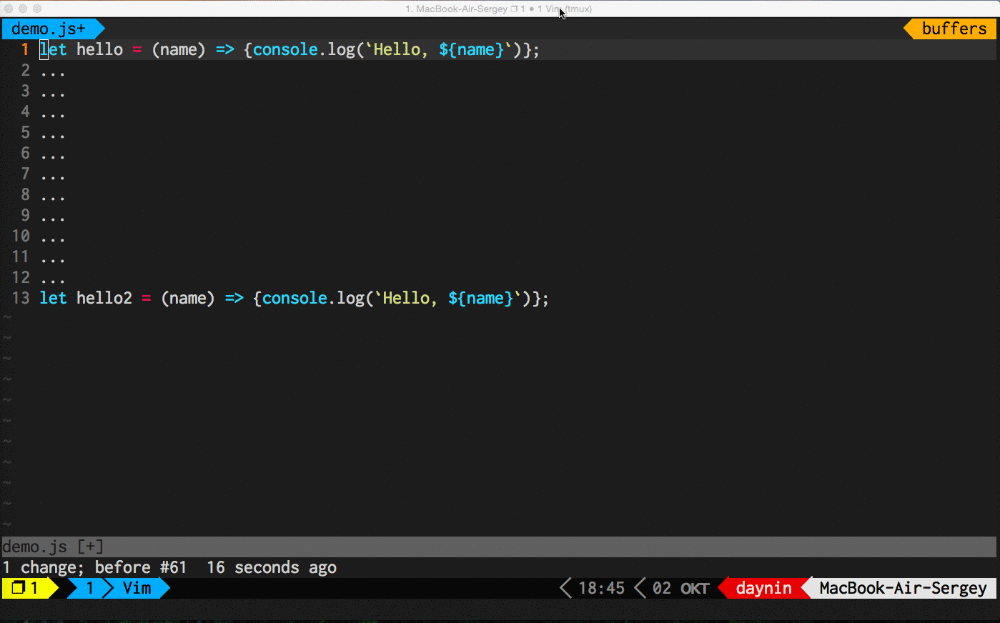

С чего все началось?
- Каким-то неведомым образом я стал программистом
- Первые деньги заработал на языке C#
- Соответственно, использовал Visual Studio
Visual Studio - очень развесистая IDE и очень мощная
Ну слишком развесистая...
Порой c VS все становится похоже на визуальное программирование
Но уже тогда я стал понимать одну очень важную вещь:
Нельзя писать код, не используя слепой десятипальцевый метод набора текста
Первый тезис: слепой набор очень важен для программиста!
Только человек, владеющий данным способом набора текста, может удобно пользоваться
автокомплитом, так как не тратит время на переключение внимания с клавиатуры
на экран и обратно
Тогда же я стал понимать и другую вещь:
В VS нужно постоянно что-то настраивать в меню проекта, меню сборки, меню
меню меню меню меню меню...
Ксати, думаете Visual Studio проще vim'a? Как бы не так
Книга по vim: 346 страниц
Книга по VS: 1320 страниц
Но суть не в этом. Самое главное что:
- Подобные IDE мешают пониманию технологии, скрывая их за различными меню
- Человек тратит много времени на изучение конкнтерной IDE, а не языка,
технологий. Отними IDE, или дай другую - он ничего не сможет сделать
- Со временем становишся заложником стэка технологий, не понимая, как и
что работает без знакомой IDE, в которой настраивается конфигурация,
которая делает билд и потом еще деплоит
Позже в моей профессиональной жизни последовала смена стэка технологий
Хоть тогда уже у меня был опыт работы в vim, но мне нужно было быстро начать
работать, и я выбрал...
Это отличный гибкий в настойке редактор, позволяющий очень эффективно работать
с кодом, расширяя свои возможности многочисленными плагинами
Второй тезис: редактор или IDE должны работать очень быстро и быть очень хорошо настраиваемыми
Чем дальше в лес, тем больше осознание одной простой истины...
Программисты - воины клавиантуры!
Это значит, что:
- Мы очень много пишем!
- И еще больше редактируем!!
- А самое важное - мы перемещаемся по тексту!!!
Третий тезис: чем чаще мы переносим руки с "основной" клавиатуры на мышь, или дополнительные клавиши, тем больше тратим времени
Итак, почему же vim?
- Vim позволяет на всю использовать навык слепого набора текста
- Vim очень быстрый и отлично настраиваемый редактор с бесчисленным множеством
плагинов
- Vim позволят вообще не убирать руки с основной клавиатуры. Делая процесс
редактирования кода, перемещение по нему и его написание наиболее эффективным
Быстрое перемещение к нужному месту в строке
Быстрый replace нужного слова
Быстрое перемещение по тексту куда угодно :)

Tmux поможет вам использовать рабочее пространство максимально эффективно
Не используя мышь ;)
Пример автоматического запуска сборки и тестов в соседней панели tmux
Почему не vim-mode?
Ответ очень простой - там работает не все
А важно ли это все?
Да, очень важно использовать свой инструмент на всю катушку, даже если
это не Vim.
Но ваш редактор или IDE не должны скрывать от вас детали технологии...
Ведь, как сказал великий киллер...
Винтовка — это первое оружие, которым ты должна научиться пользоваться. Потому что оно держит тебя на почтительном расстоянии от клиента. Чем больше опыта, тем ближе подходишь к клиенту.